Oxygen Not Includedが異質なゲームである理由
Oxygen Not Includedが異質なゲームである理由
自分は育成シミュレーション・箱庭系のゲームが好きです。古くはSimCity、Civilization、Warcraft… ここ数年だとFactorio、Rimworld、Frost Punk、そしてOxygen Not Included (以下ONI）。
Oxygen Not Included is a space-colony simulation game. Deep inside an alien space rock your industrious crew will need…store.steampowered.com
それまではウィニングイレブンやFIFA等サッカーゲームをすることが多かったのですが、それは子供がいる中、10〜15分で1試合できるので重宝してたからです。結構やりこんだのですが、さすがに少し飽きてきました。
FPSも少し試してみましたが、性格的にイマイチ合いません。そんななか、Youtubeで偶然実況プレイを見てしまったのがOxygen Not Includedです。
ONIは本当にここ10年くらいやってたゲームの中で特に衝撃を受けたゲームです。このジャンルのゲームとしてはかなり異質で、今までになかった要素に気を払いつつプレイできるため、とにかくやりまくっています。気づいてみれば1000時間以上このゲームをプレイしていました。
そして実はこのゲームの開発者をbuilderscon tokyo 2019で招聘する予定です！
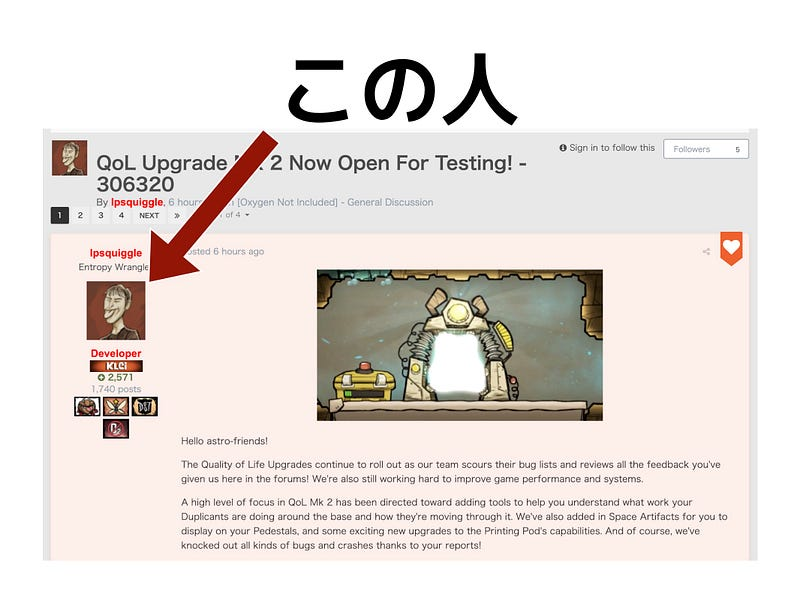
それに先駆け、本記事ではこの異質なシミュレーションゲームについて解説していきたいと思います。なお本記事は有志で先日開催した、 ONIconでのキーノート発表（？）を再構成したものとなっております。
Oxygen Not Included Mini Conference 2019 winter Kleiによるコロニー開発・運営ゲームOxygen Not IncludedユーザーのためのMeetupです！ Oxygen Not…connpass.com
ゲームの世界観
ONIはとある小惑星の地下で3人の人間（？）が目覚めるところから始まります。地下深くの小さな穴の中で目覚めた3人。そこにあるのは謎の光る機械、いくばくかの食料、そして手に持っている謎の工具。
一体何があったのか？進んだ技術でしか実現不可能なツールを手に持っているのに、全ては地下に埋もれているのは？3人だけが目覚めたのは？
彼らはここで生き延びるために衣食住の確保をしなくてはならない。しかし、ここではもう一つ重要な事がある。この地下には限られた酸素しかない。彼らは衣食住の他に自分達の吸う空気まで確保しなければならないのだ。
… という感じでゲームは始まります。
基本プレー
ONIは基本、横方向から見たマップ上で上下に穴を掘りつつ、食料を作ったり、施設をたてたりして、それらを使って生き延びていくことを延々と続けるゲームです。
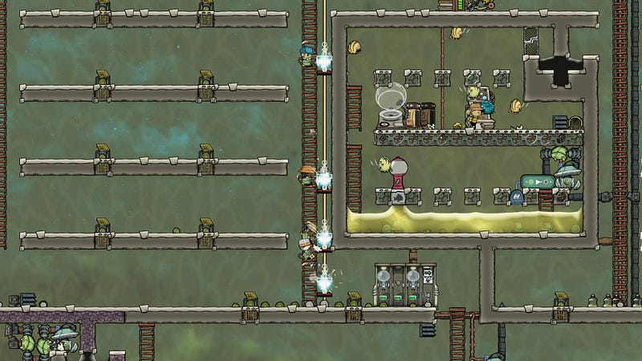
食料が尽きれば誰かが死にます。
酸素供給が無くなれば誰かが死にます。
食料を得るためには動物を殺して肉を得たり、生えている植物を採取して料理をする必要があります。
しかし、それらの資源も有限です。それらが無くなれば誰かが死にます。
生産能力をあげたり、自動化する仕組みを作り上げて効率をあげたりすることにより、より多くの人間を養うことができるようになり、より大きな仕組みを作ることができるようになります。
ここまでは生産チェーンの存在する既存のゲームとほとんどかわりないのですが、従来のゲームと比べるとリソースを作ったり、運んだり、消費したりするだけではなく、いくつか追加で考慮しないといけない要素があります。
この追加部分こそが本ゲームの異質な部分であり、最高に魅力的な部分なのです。
科学・物理法則
ONIの異質な点はとにかくその科学まわりにあります。他のゲームでもあらたな施設やアイテムを作るのに科学的に正しい（正しそうな）材料を揃えないと生産ができない、という場合もありますが、本作品の場合、環境・施設・生物との間での作用を考える必要があります。
例えば重力を考えてみます。ONIでは酸素、水素、塩素、二酸化炭素といった気体がいくつか存在します。従来のゲームではこういった気体は特定の部屋だけにしか存在しなかったり、そのうち消えたりして特にそれ以上の作用を及ぼす物はほとんどありません。
ところがONIではまず重力が働き、これらの気体を混ぜておいておくと気体の比重により比較的キレイなグラデーションを描きます。
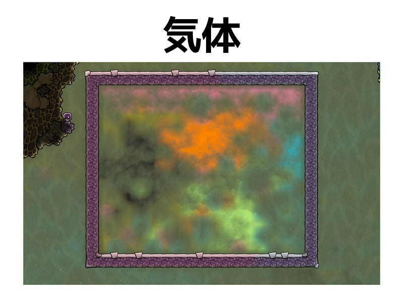
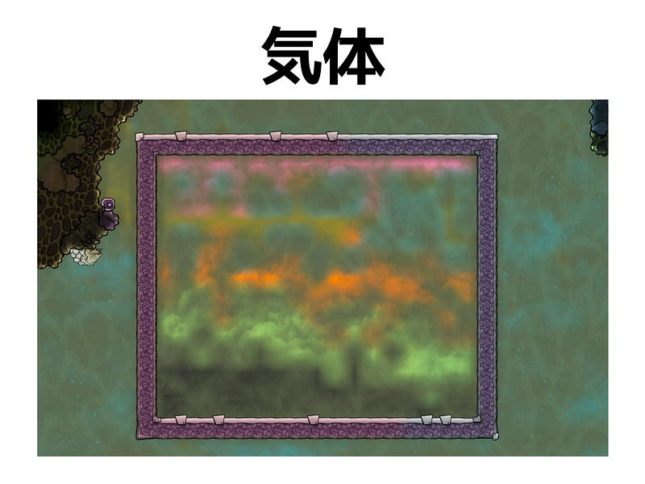
上記の画像では、水素、酸素（汚染酸素）、天然ガス、塩素、二酸化炭素の順でガスが落ち着いていくのがわかります。
これらの気体の特性を知り、例えば水素のある部屋から水素を抜かないようにするには下に出入り口をつけるとか、二酸化炭素は下に溜まりやすいから二酸化炭素を処理する装置は下方面に作るとか、そういったことを考えながらゲームを進める必要があるわけです。
このゲームの液体にしろ気体にしろ、ただそこに存在するだけではありません。気圧や温度によって、それぞれが相互作用します。
Rimworldのようなゲームでは、「部屋の温度」と言った概念が存在します。部屋の温度によっては中にいる人が病気になったり、食べ物が腐ったりします。
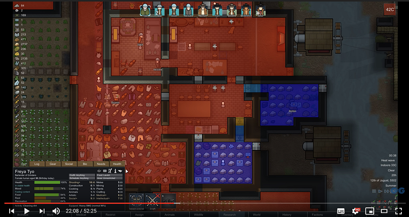
ONIでも温度の概念が存在しますが、上記のような単一的な影響だけでなく、ゲーム内の他のオブジェクトと相互作用しあい、よりリアリスティックな作用をもたらします。
ONIでは真水の中に200℃くらいの焼けた石（鉱物）を入れれば、熱が水に伝導し、水の温度が上昇します。
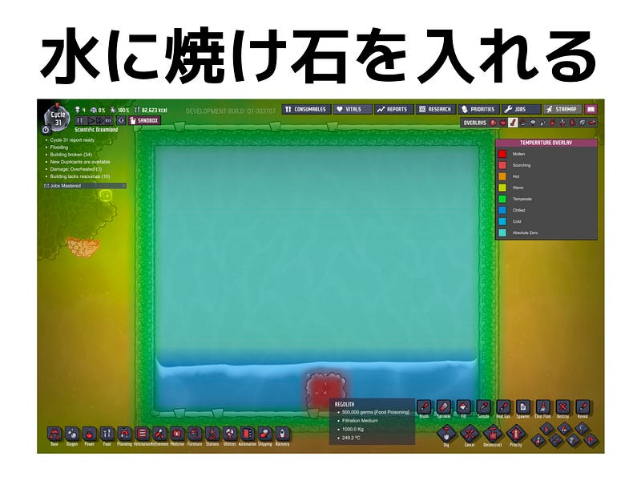
水の温度が充分に上昇し103℃まで達すると、状態変化が起こり、水は水蒸気にかわります。
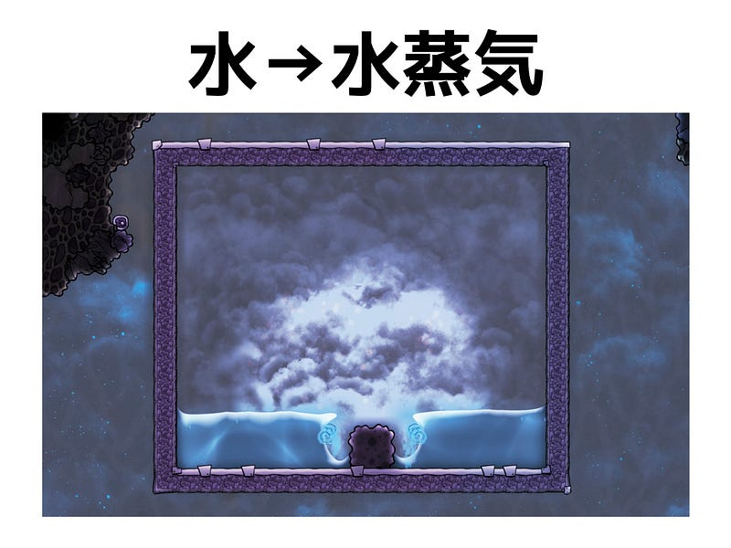
水蒸気が発生するくらい水が熱せられたということは石はその分冷めています。熱がなくなるわけではなく、あくまで熱交換が行われるだけなわけです。
熱せられた水蒸気は97℃まで冷却されればまた元の真水に戻りますので、例えば40℃の水を輻射パイプで水蒸気の中を通るようにすれば、パイプと水蒸気での熱交換により水蒸気が冷却され、真水にもどって落ちます。
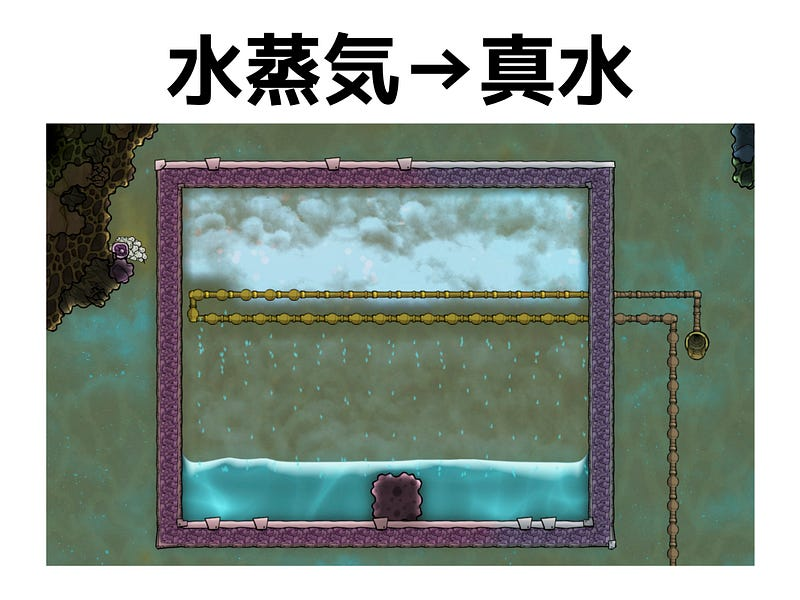
また、熱の影響範囲は限定的ではなく、基本的にゲーム内の気体・液体を含む全てのオブジェクトが熱容量と熱伝導率を定められているので、ちゃんとコントロールしないとマップの端の方で熱を発している機械の影響が真ん中のほうまで影響することもありえます。
熱や重力の他にも気圧も考慮しないといけない重要なファクターです。例え21℃の快適な温度の酸素に囲まれていても、気圧が高すぎると機械が動かなくなったり、作物が育たなくなります。
逆に気圧が低すぎると、今度は重い…つまりマップの下に本来沈んでいるはずの気体がマップ上部にあがってきます。酸素が充分ある空間なら二酸化炭素は下のほうあるため充分呼吸ができますが、酸素が薄くなるとその分二酸化炭素が上に浸食してきて、いままで酸素で埋まっていた部屋が二酸化炭素だらけになったりします。
気圧がゼロになれば真空状態です。真空では熱交換は行えません。
このような科学・物理法則に従い、環境に及ぼす影響をコントロールしながら設備を作るのはとても困難であり、かつチャレンジングです。
副作用
ONIの世界では材料をそろえてなにか生産するときにその最終成果物だけがほい、と得られておしまい、ということはほぼありえません。基本的に全ての行為には副作用がつきます。
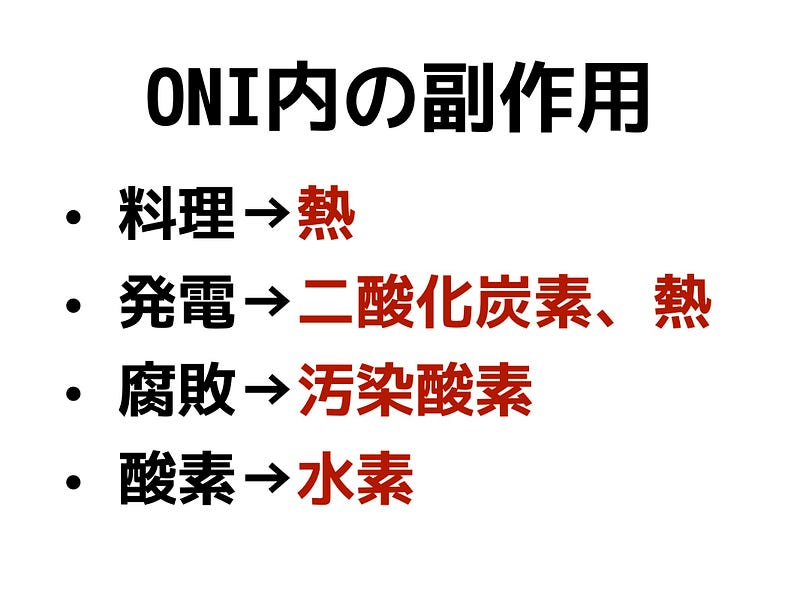
上記のような副作用を制御しながら目的を達するという非常に難しい条件がプレイヤーにつきつけられます。
ONIでは電解機という機械で真水から酸素を得る事ができるのですが、その処理自体は 真水＋電気＝水素＋酸素＋熱 と表すことができます。
つまり酸素を得ようとしたら、必ず水素と熱が発生するので、ただただ酸素を垂れ流すわけにはいきません。必ず熱と水素という副作用を考慮し、水素はエネルギー源として消費したり、熱は籠もらないように配慮してキャラクター達が熱中症にならないよう気をつけないといけません。
他にも、飼育する動物、無限に沸いてくるいくつかの資源、その他細部に至る全てにおいて、基本副作用のない行為はひとつもありません。ひとつの目的を達成するにはそのための施設をひとつ建設するのではなく、リソースが循環するように仕組みを考えていかないといけません。
仕組みの構築
そしてここでプレイヤーをこのゲームの虜にする様々な仕組みの構築がでてきます。物理法則や副作用のせいで異常に難しい条件の中、目的を達するためのピタゴラ装置的な仕組みを考えるのが心から楽しいのです。
仕組みの一例として、ハッチという飼育可能な動物の生態とその飼育の半自動化を考えてみましょう。
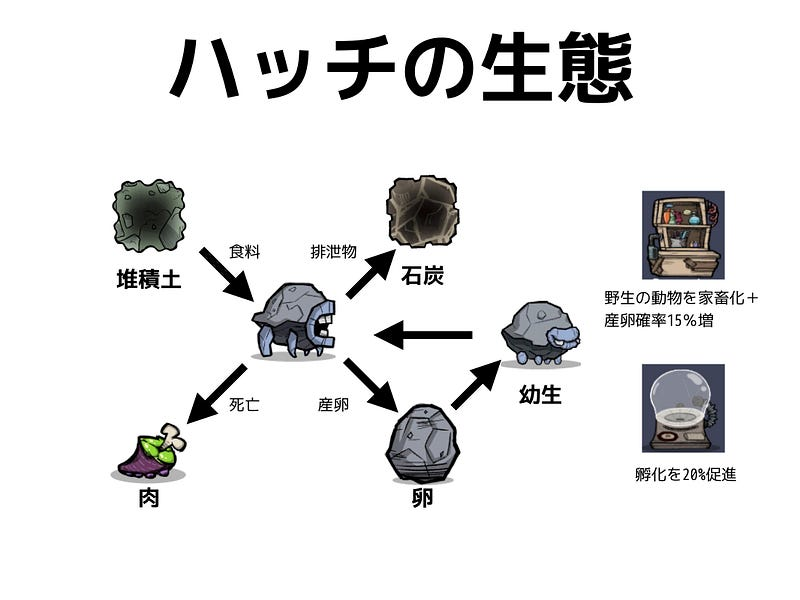
ハッチ（この場合は石ころハッチという亜種）は鉱物を食べ、石炭を排泄する生き物です。手入れをすることにより家畜化され、卵をたくさん産むようになり量産することができます（家畜化しないと、一生のうちに一回しか産卵しない）。卵はそのまま食べ物として消費することもできますし、孵化させて幼生を得る事もできます。なんらかの理由で死ぬと、ハッチは「肉」となり、食料として利用することができます。
全体的に有用な家畜なのですが、排泄物を一箇所にまとめたり、卵を孵化するために孵化器に入れたり、肉が腐る前に冷蔵庫に入れるといった作業を人力で行うと人手が結構かかり、効率が悪くなります。このため、自動化の仕組みが欲しいところです。
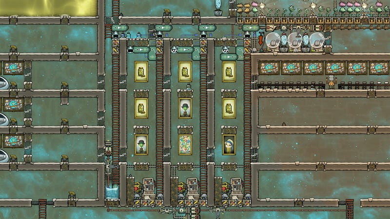
そこで上記のような仕組みを作ることにより、懸念事項がだいたい全て解決できます。
画像上部の廊下部分ではロジックゲートと生物センサーを組み合わせることにより、適切な飼育部屋（か、ハッチを水没させて肉にする殺しの間）にハッチが自ら移動するように仕掛けがほどこされています。
家畜化は画像の下部で行われ、キャラクター達が最小限の距離でハッチに届くように敢えて床面積が少なくなっています。ハッチ達が生む卵や排泄する石炭は定期的に開くようになっている床（ドア）から下に落ち（卵とかは落ちるのになぜかハッチは落ちない、というゲーム仕様）、自動的に収集されます。
このような仕掛けを発電、栽培、飼育、火山の活用、はたまたロケット発射のような様々なシーンで、ランダムに生成されるマップに対して適用していく… これこそがこのゲームの醍醐味であり、中毒性の高いキモ部分なのです。
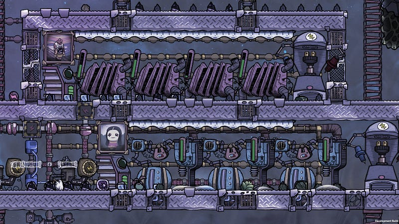
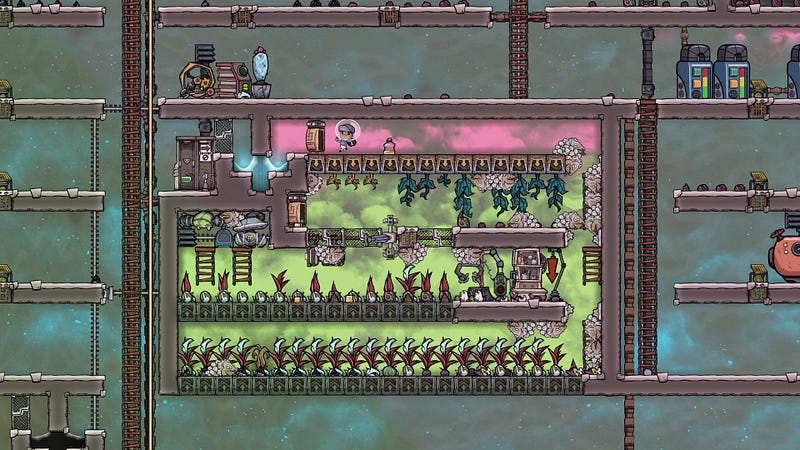
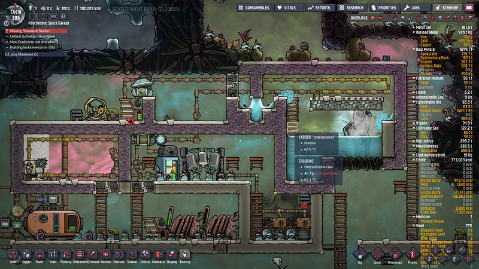
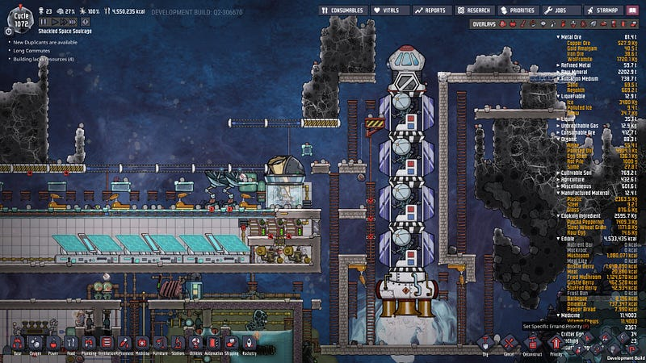
難しい、だからこそおもしろい
ここまで説明してきた部分 — ゲームを進めていくための各種の制限 — が従来のゲームより厳しく、同時にそれらの制限を乗り越えるための仕掛けの作り方が異常に柔軟な事がこのゲームの本質的な異質さであり、おもしろさであると自分は感じています。
基本的な問題が難しく、それを解く方法がたくさんあるというのはプログラマーのような人種にはたまらない魅力を持ったゲームだと言えます。
これを機に是非皆様もこのゲームを手にとっていただけたら、builderscon tokyo 2019ももっと楽しんでいただけるはずです！
スポンサー募集中！
本エントリー執筆時点で、builderscon tokyo 2019はスポンサーを大大大募集中です！ゲーム以外にもWeb、IoT、データベースからカミオカンデまで、様々な技術の世界を集めて皆様の「知らなかった、を聞く」場所を提供しますので、是非ご参加ください！
今年8/29-31開催予定の builderscon tokyo 2019 に向けてスポンサー募集を開始しました！ 2016年より開催してきましたbuilderscon…blog.builderscon.io